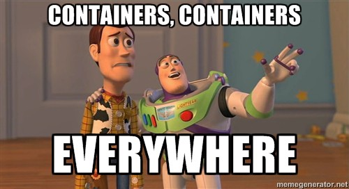

Docker is an open-source containerization tool. It allows you to package and run an application (or even just a script or a simple command) in a container, an isolated sandbox that runs on your host (local) operating system (OS). The container will not only contain the application itself, but also all of its dependencies, including a (stripped-down) operating system.
Containers are often used for deploying application on a server, since they are straight-forward to migrate and scale-up, but they can also be a real asset in reproducible science! By providing a docker image of your application or even just an analysis pipeline, others will be able to run the code in the exact same environment you originally implemented it.

They are similar to virtual machines (VMs), but there are two distinguishing features that set them apart (see official docs). First of all, from a technical standpoint, containers perform fewer emulation tasks since they share the host OS' kernel.[1] A process running in a container will use the same amount of memory as a native process. VMs on the other hand rely on virtualized hardware to run a completely isolated guest OS. Secondly, while virtual machines are often used in an interactive manner, by providing the user with a full OS-in-a-box that they can use just like a standard desktop, containers are intended to run as one-off instances, but more on that later.
We'll first create a very simple docker application, and then delve into its components step by step.
docker run -it --rm debian echo 'Hello world!'
Hello world!
Congrats, you've just run your first docker container!
Let's unpack what has happened here:
docker run attempts to launch a container.debian.-it is a flag that tells docker to redirect the container's input/output/error streams to our host's terminal. --rm removes the container after it has finished running.Don't worry though, we'll go over everything in more detail step by step. Starting with...
Containers, the isolated instances that run a specific application, are always based on an image. You can think of the image as a blueprint or a system snapshot. It defines a system environment, any required libraries, the file system and (configuration) files, and even things like background processes or necessary preparatory steps. In a nutshell, all the steps we would have to perform on our own operating system before we can use the desired application.
The Docker Hub is an only repository where you can browse images made by both regular users and so called Official Images, a curated set generally consisting of base operating systems (e.g. debian, ubuntu and busybox[2] and ready-to-go containers for popular frameworks and languages (e.g. python, R, nodejs).
Images are hierarchical. Most of the images you will create yourself will be based on a previous, more general parent image, often one of those Official Images, but perhaps in a certain situation it makes more sense to base an image on one of your own.
You can list all of the images that are available on your system as follows:
docker image ls
[todo]
You might notice a bunch of duplicates tagged as <none>. Don't worry, these images only take up space once.
And you can obtain a specific image manually using the docker pull. The names are formatted like [todo],, version. Many images allow you to either specify a version or just use the latest available (stable) version (often labeled latest or stable). Some images also provide a slim version, these are usually light-weight images lacking most functionality apart from only those things that are required to run a specific application. These are a good bet if you want to reduce the file size of your images (but more on that later).
Most of the time however, you won't be using the pull command yourself, instead, you'll either run a container based on an image directly and docker will download the required image automatically (as in the Hello World example) or you will build your own image based on a Dockerfile. We'll go over those in a bit, but let us first dive into run statements and existing images.
runningLet us explore the docker run command in some more detail, without worrying about what exactly it is that we're running.
The simplest form of a run command would be something along the lines of the following:
docker run debian
Which produces no output... Huh? What's going on here?
Well, the above command spins up a container that is based on the base debian image. You can look up details (and the Dockerfile) of this image here. You will see that there are multiple versions of this image, so-called tags. It's a good practice to always specify the correct version tag of images, since a tag like latest is not static in time.
This image has a command that specifies the process it will run, which is simply: CMD ["bash"].
When we issue the above command, behind the scenes a container will start, and our supplied command (which is empty) will be passed on to this bash statement. Having nothing to do, the container will simply shut down itself immediately.
Instead, we can pass an argument like we did in the Hello World example.
docker run debian echo "The current working directory is $(pwd)" \ && cd /var/ \ && echo "the contents of /var/ are" \ && ls -l
If you're not familiar with the && syntax, it is a way to chain multiple commands into one statement. Each subsequent command will only be executed after the previous one is finished (succesfully).
To see a list of active containers, the docker container ls command can be used. What do you think we'll see when we run it at this point?
docker container ls
If you guessed nothing, you were right. The list is still empty because the container shut down itself after running the final ls -l command. Containers do their job and then shut down.
There is however a more useful variant of the container ls command that we can run:
docker container ls --all
The STATUS column tells us when and how these containers exited (an exit status of 0 in linux means that a command was run without any problems arising).
All of this brings us to one of the most important aspects of docker containers.
Docker containers are ephemeral.
Containers are short-lived. They are created after a specific state of a system (described in the image), will do whatever it is you instructed them to do, and then disappear. They will leave no traces.
We can demonstrate this behaviour by running two containers in a row.
docker run debian tee 'cowabunga!' /home/pizza docker run debian ls -l /home
Always keep this in the back of your mind. It will be extremely important when you start relying on containers to produce (and hopefully store) the output of a certain analysis.
Docker containers are given an ID automatically (e.g. 7a0c1129df9a), but this is rather cumbersome. Instead, you can use the --name flag to specify your own name to refer to a specific container.
Most of the time we want to run a container in the background, but there are a few situations where interaction can be useful. Debugging is one of them. Trying out small parts of an image you are creating is another.
The easiest way is to pass the -it flag (allocates a tty) and specify a shell command such as sh (for the minimal busybox images) or bash (in most of the linux-based images). Give it a try!
docker run -it debian bash
Use <ctrl>+d or type exit to leave (and shut down) the container.
This is quite useful whenever you're unsure of the exact file structure your image has. I.e., you can write a Dockerfile, add some files, then run it interactively to see if everything is where it's supposed to be. In a similar vein, I've found it useful to figure out file permissions and user ids.
If you're feeling adventurous, this also allows you to finally witness what happens when you run a command like rm --rf. I'm not liable when you accidentally run it in your host terminal instead of the container though!
Another method is provided by the exec command (see docs), which can inject a command into any containers that is already running. For example:
docker run -it --rm --name sleepy_debian -d debian sleep 100 docker container ls docker exec -it sleepy_debian bash
Note that we used --name to give the container a name, rather than relying on the long ID, and we used the -it flag again to enter interactive mode.
To clean up all these unused containers you have collected (see docker container ls --all), you can use the prune commands:
docker container prune
Or you can issue the --rm flag to your run statements. This will ensure that containers are removed after they shut down.
There also exists a prune command for images (and other docker entities), so have a look at the docs https://docs.docker.com/config/pruning/ for more information on how these pruning commands behave.
Dockerfiles are the meat and potatoes of docker. All the images we have used so far, are based on a Dockerfile as well. You can inspect it by clicking on the tag names in Docker Hub.
Rather than relying on pre-existing images, we will build our own. Here is an example:
# Use an official Python runtime as a parent image
FROM python:slim
# Ensure that Python outputs everything that's printed inside # the application rather than buffering it.
ENV PYTHONUNBUFFERED 1
# Set the file maintainer (your name - the file's author)
MAINTAINER Splinter
# Set environment variables
ENV MY_DIR=/opt/technodrome
# ARG variables are only available during the build process
ARG USERID=999
ARG GROUPID=999
# Copy a pip requirements file, install packages and remove the leftovers
COPY requirements.txt /tmp/
RUN pip install --no-cache-dir -r /tmp/requirements.txt && \
rm -rf /tmp/requirements.txt
# Install required packages via apt and clean up
RUN apt-get update \
&& apt-get install -y --no-install-recommends \
cowsay \
&& rm -rf /var/lib/apt/lists/*
# Create a non-root user (optional!)
RUN groupadd -r -g ${GROUPID} tmnt && \
useradd -r -g Donatello -u ${USERID} -s /sbin/nologin Donatello
# Make port 8000 available to the world outside this container
EXPOSE 8000
# Copy the current directory contents into the container at /app
COPY . /opt/src
# Copy source (and data files)
RUN echo "important ninja business" > ${MY_DIR}/ooze.txt
# Remove windows new lines and set correct permissions
# NOTE: initialize empty directory for shared static volume!
# otherwise the permissions will be lost!
RUN sed -i 's/\r//' /opt/src/scripts/* && \
chmod -R +x /opt/src/scripts && \
chown -R Donatello /opt/src
# Change to non-root user
USER Donatello
# Set the working directory
WORKDIR /opt/src
# Entrypoint to perform Django static file collection
ENTRYPOINT ["bash", "./scripts/pizza-time.sh"]
# Run your script
# CMD ["./scripts/shell-shocked.sh"]
The difference between these is explained in more detail here and here.
In a nutshell:
RUN statements are used to configure things inside the image, e.g. installing software. The state of the final image is post-these-operations.CMD statement defines the command that is executed by default when a container is created from the image. Note however, that you can override this value by passing another command via the command line, e.g. docker run image <command-here>ENTRYPOINT statements cannot be be (easily) overridden from the command line. They should be usedInside a Dockerfile (and also compose files) there are two forms of defining commands (for ENTRYPOINT, CMD and RUN statements).
ENTRYPOINT ["executable", "param1", "param2"]ENTRYPOINT command param1 param2The former is prefered by the docs, and more information can be found here and here.
However, the exec form does not perform all types of shel processing, e.g. variable expansion will not occur (because the statement is processed by docker instead of the shell inside the container). See here.
You can use a \ to split a command over multiple lines:
RUN pip install --no-cache-dir -r /tmp/requirements.txt && \
rm -rf /tmp/requirements.txt
Poorly written Dockerfiles can lead to oversized images, so I recommend having a look at some best practices. A major remark is to keep the number of statements (or layers) to a minimum. You can do this by combining multiple RUN statements into one:
RUN apt-get update && apt-get install -y \
aufs-tools \
automake \
build-essential \
curl \
dpkg-sig \
libcap-dev \
libsqlite3-dev \
mercurial \
reprepro \
ruby1.9.1 \
ruby1.9.1-dev \
s3cmd=1.1.* \
&& rm -rf /var/lib/apt/lists/*
Sometimes you want processes to run in the background, i.e. you do not want all the output to appear on your terminal. To do that, you can use the -d/--detach flag.
You've seen that you can use a COPY statement to get files into your container. And you also know that containers are temporary. So does that imply you lose all of the output your process generates?
That brings us to volumes. A complete overview is given in the docs.
There are two types of volumes: bind mounts and named volumes.
With bind mounts, you mount a directory on your host machine on top of a directory inside of your container.
mkdir -P bind_mount_test touch bind_mount_test/krang docker run -it --rm -v /my/local/dir:/container/dir
What is important to take note of here is that the bind mount will override anything that is in your container. For example, suppose we have a statement like COPY . /src in our Dockerfile (which would initialise a directory in the image located in /src containing all files in your local working directory). However, when you bind mount something on top of /src, it will override its contents. This ensures that you never accidentally wipe data on your host machine by replacing it with things inside an image. Remember, the image is self-sufficient and contains all information it would ever require, your host machine is not.
Also note that the first filepath (the one on the host machine), cannot be a relative path, it must be the full filepath.
Named volumes are the second type of volume. Instead of mounting a host directory, they simply give a name to a directory inside of your container. After the container is finished (and/or removed), the volume will remain. You can then later mount it again or retrieve data from it directly. They use the same syntax as bind mounts, but replace the first filepath into a name, e.g. -v my_volume:/my/container/path.
Finally, there is also an option to copy data directly into a running container: https://docs.docker.com/engine/reference/commandline/cp/.
When things go wrong, and trust me, they almost always do, you will need some tricks to figure out what's going on. Like always, google is your best friend in this regard. Docker's documentation is also quite extensive and I highly recommend you consult it when trying out new features. That being said, it will likely take some time and experience before you will be able to completely digest everything and understand all implications that a certain explanation might have on seemingly unrelated aspects of Docker.
Unfortunately, it is likely you will hit a few bumps when you attempt to configure your first containers (or set of containers).
Generally, containers should only be doing one thing. There might be a few background processes running (indeed, there's usually an entire linux OS running), and there's nothing wrong with running multiple scripts in a row (the script calling the pipeline itself can be considered the _"one thing".), but as soon as you find yourself trying to run multiple things simultaneously, you should reach for docker-compose.
Docker-compose allows you to orchestrate multiple containers as one unit. This is useful for things like web applications that require a web server, load balancer, database, etc.
Docker-compose is managed by docker-compose.yml files, which are YAML files that borrow most of their syntax from Dockerfiles. Most options can be set in either, but off-loading most of the work to compose files is useful because you'll be able to re-use parts across multiple containers. You can also specify docker run command line flags directly in compose files, making it much easier to set up a shared volume across a bunch of containers or to run multiple containers in the same virtual network.
For a more complete overview of how docker-compose works, check out the documentation.
Technically this is only the case when you run docker on Linux. In Windows and MacOS, docker runs inside a Hyper-V VM, which still only utilises part of your system's hardware through virtualization. ↩︎ ↩︎
Busybox is a tiny image that provides various UNIX utilities. Note that it does not even contain bash, only sh. ↩︎